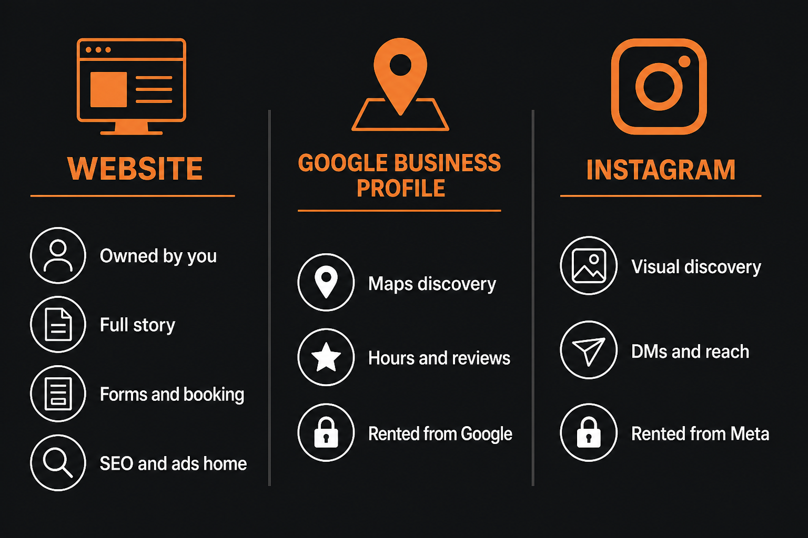

Plenty of Las Cruces and Mesilla owners are doing real business with a Google listing, an Instagram page, and a phone. Then someone Googles them, finds thin results, and books the competitor who looks more complete. The question is not “does every human on earth need a website?” It is “does your buyer path need one yet?”
Short answer: most businesses that want to grow, advertise, or survive a bad platform week need a site. A smaller set can wait a little. This guide covers who, when, why, the real benefits, and what “enough for now” looks like. No scare tactics. No “you must have a 40-page mega site.”
The honest answer
A Google Business Profile and a website do different jobs. The profile wins many “near me” discovery moments. The website is where interested people confirm you are real, read details that do not fit a form field, fill out a lead form, book, or land from ads and non-Maps search. Guides comparing the two in 2026 keep landing on the same conclusion: use both. Treating the profile as a full website caps how far you can grow.
BrightLocal’s local consumer research has long shown that people research before they buy local. After reviews, a large share keep digging, and many of those people visit the business website. If that click goes nowhere useful, you lose the high-intent part of the journey.
Instagram can carry a visual, community-driven side hustle for a while. It is still rented land. Meta controls reach, links, and whether your account stays up. Same story with Google: profile suspensions happen, and when your only lead pipe is Maps, the phone goes quiet.
Who needs a website now
If any of these sound like you, stop debating and get a real site (even a simple one):
- Service businesses people compare. HVAC, roofing, legal, clinics, agencies, contractors. Buyers check more than a Maps card before they call.
- Anyone running ads. Google Ads, Meta ads, and most paid campaigns need a landing destination you control. A profile is not a conversion page.
- Anyone selling online or by quote at volume. Products need checkout or a clear catalog path. Quote-driven services need forms, service pages, and proof.
- Businesses that want organic search beyond Maps. Informational and long-tail queries (“cost of…,” “best… for old homes,” “how it works”) rank on websites, not Instagram bios.
- Teams that need one source of truth. Hours, services, pricing ranges, service areas, careers, press. Update once on your domain instead of hunting through five apps.
- Anyone who has been burned by platform risk. If a suspended listing or locked social account would wipe your inbound leads, you need a backup home.
For Mesilla Valley owners, that list covers most Main Street and trade businesses that want customers who did not already know them by name.
Who can wait (for a while)
Waiting is fine when the risk is low and cash is tight. Waiting forever usually is not.
- Brand-new and unvalidated. If you are still testing whether anyone will pay, a complete Google Business Profile plus clear social can buy you a few weeks while you prove the offer.
- Referral-only and at capacity. If every job comes from people you already know and you refuse more volume, a one-page site is nice, not urgent.
- Tiny visual side projects. Market stalls, commission art, or pop-ups that live entirely in DMs can start on Instagram. Treat that as temporary.
Studio Slate’s 2026 framing is useful: if every customer already walks in from pure referrals and you do not want growth beyond that, a site is optional. Most businesses that care about search, ads, or “I googled you and found nothing” still need at least a minimum brochure.
Website vs Google Business Profile vs Instagram

| Job | Website | Google Business Profile | Instagram / social |
|---|---|---|---|
| You own the address | Yes | No | No |
| Maps / local pack discovery | Supports it | Strong | Weak |
| Rank for non-Maps search | Yes | Limited | Rare |
| Full story, proof, FAQs | Yes | Fixed fields | Feed-shaped |
| Custom forms / booking / cart | Yes | Limited | Limited |
| Ad landing destination | Yes | Poor fit | Poor fit |
| Platform can suspend you | No (your host / domain) | Yes | Yes |
Practical order for most local launches: complete the Google Business Profile first (fast and free), then put a real website on your own domain within about 30 days, then link the two with matching name, address, phone, and categories. Keep Instagram as a discovery and proof channel that points home.
Google’s auto-generated “free website” from a profile is a placeholder at best. It is not a substitute for a site you can shape, form-optimize, and keep when products change.
Benefits of having a website
1. You own the asset
Domain plus hosting is property you control. Algorithms and policy teams can still annoy you, but they cannot delete your URL the way they can lock a social page or suspend a listing overnight.
2. Trust for people who are almost ready
Reviews get attention. Websites close the loop. Hours, services, photos of real work, insurance language, service areas, and a human About page answer the questions that keep serious buyers from calling. Missing or broken sites look unfinished next to competitors who bothered.
3. Capture leads the way you want
Custom forms, quote qualifiers, booking widgets, chat, and clear tap-to-call on mobile. Profiles and DMs cannot match a form that asks the three questions that save you a wasted drive across town.
4. Search and content that compounds
A site can rank for service pages, FAQs, and guides people search months after you publish them. That is free traffic that does not depend on today’s Instagram reach. Local organic results under the map pack are websites.
5. A place for ads and campaigns
Paid traffic without a landing page is money poured into a leaky bucket. Specific offers need specific pages. Seasonal promotions, hiring, and event pages live on your domain.
6. Consistency across the business
One NAP (name, address, phone), one service list, one brand story. Email signatures, print pieces, vehicle wraps, and partner directories can all point to the same URL. That consistency also helps local SEO.
7. Backup when platforms hiccup
Agencies and owners keep reporting the same nightmare: a Maps suspension and no website means invisible. A site does not replace reviews and Maps. It keeps you findable and bookable while you appeal.
8. Room to grow into the right type
Start as a brochure. Add booking, a few products, or a blog when revenue justifies it. That path is covered in our types of websites guide. The benefit of starting with a site is that you have somewhere to grow into.
When to get one
- Before you spend real ad money. Fix the destination first.
- When strangers start comparing you. If jobs come from Google, Facebook groups, or “who do you recommend?” posts, you need a place those strangers can verify.
- When phone tag or DMs waste hours. Forms and booking beat endless message threads.
- When you outgrow “link in bio.” If every answer is “check my highlights,” you are due for pages.
- Within the first month of taking customers, for most local businesses that are not purely referral-capped.
Do not wait for a perfect brand book. A clear, fast, mobile site with honest photos beats a delayed masterpiece.
What minimum looks like
You do not need a $10,000 custom build on day one. You need something that loads fast on a phone and answers:
- Who you are
- What you do (and where)
- Proof you are real (reviews, photos, about)
- How to contact or book
For many Las Cruces service businesses that is a small brochure or lead-gen site linked from Google Business Profile. Add booking when scheduling pain shows up. Add ecommerce when people should buy without a conversation. Match the website type to how people buy, then stop overbuilding.
Not sure if you need a site yet?
Tell Blacnova Development how customers find you today. We will say whether you need a full build, a one-pager, or just a tighter Google profile first.
Sources and further reading
- BrightLocal Local Consumer Review Survey (research after reviews, website follow-through)
- Studio Slate: do you actually need a website in 2026?
- Connascent: does a local business need a website in 2026?
- Buildrok: Google Business Profile vs website
- Homerun: do you need a website if you already have Instagram?
- Phoenix Wise: does your small business really need a website in 2026? (owner debates, suspension risk)
Comparison image created for this article. Stats and framing summarized from the sources above; always check the latest BrightLocal and platform docs for current numbers.
FAQ
Do I need a website if I have a Google Business Profile?
Most local businesses need both. The profile helps people find you. The website helps them trust you, convert, and find you outside Maps. Google also expects a website link on many listings because the two are meant to work together.
Is Instagram enough instead of a website?
For a short test or a tiny visual side hustle, maybe. For most service and growth-minded businesses, no. Instagram is discovery. A website is the home base serious buyers expect.
When should a new Las Cruces business get a website?
Profile first, real site within about the first month of taking customers, and definitely before heavy ad spend. Keep it simple: services, proof, contact.
What if I am referral-only and busy?
A one-page site with contact info and a few testimonials is still smart insurance. You can skip a big marketing site until you want growth again.
Can Blacnova Development help decide?
Yes. We scope brochure, lead-gen, booking, ecommerce, and hybrid builds for Mesilla Valley businesses, and we will tell you if waiting is the smarter move this month.
Own the home base
Social and Maps are how many people meet you. A website is how you keep the conversation on ground you control. Get the profile right. Launch a clear site when strangers start deciding. Grow the type when the business earns it.
Request a quote · Types of websites · Las Cruces web design guide · Back to the Blacnova Development blog